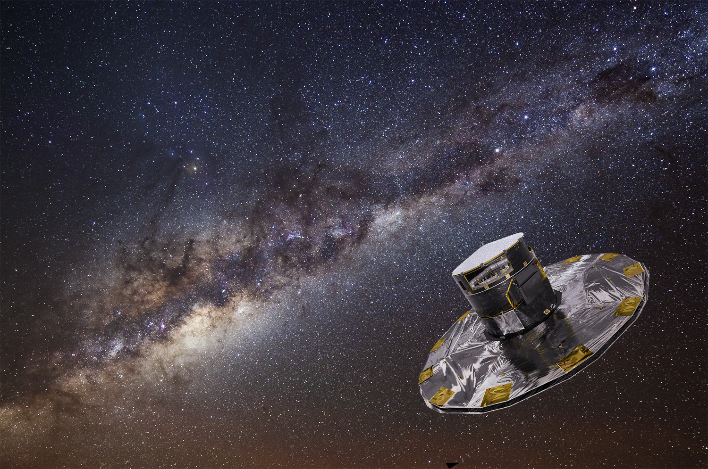

Credit:ESA
HOME-
ABOUT ME-
PUBLICATIONS-
REPOSITORIES-
PHOTOS
Publications-ADS
_____________________________________________________________________________________________________________________________________________________________
Publications
[1-2014] J. G. Fernández-Trincado, J. E. Forero-Romero, G. Foex, T. Verdugo AND V. Motta
The abundance of Bullet-Groups in ΛCDM. 2014, ApJL
[2-2014] T. Vedugo, V. Motta, G. Foex, J. E. Forero-Romero, R. P. Muñoz, R. Pello, M. Limousin, R. Gavazzi, A. More, R. Cabanac, G. Soucail, J. P. Blakeslee, A. Mejia, G. Magris, J. G. Fernández-Trincado
Characterizing SL2S galaxy groups using the Einstein radius. 2014, A&A, sent.
- [3-2014] XXXXX. 2014, ApJ, sent
_____________________________________________________________________________________________________________________________________________________________
Proceedings Contribution
[1-2013] Fernández Trincado, J. G.; Vivas, A. K.; Mateu, C. E.; Zinn, R.
Searching for RR Lyrae stars around omega Centauri (NGC5139). 2013, MmSAI, 84, 265